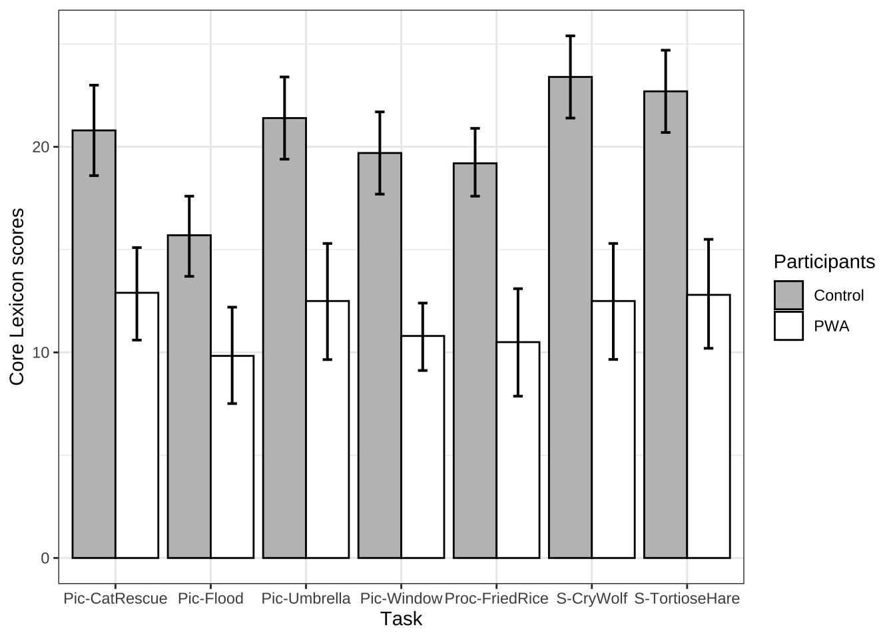

Chapter 15 实践案例 汉语失语症话语产出
详细背景请看原文献
15.1 研究背景
口语话语产出越来越被视为评估失语症患者（PWA）语言能力的重要来源。如果有相关话语产出的转录本，一些语言学指标，如类型-标记比（TTR）或平均语句长度，可以自动化处理，以辅助PWA的话语分析。其他类型的指标，如主要概念（Dalton & Richardson, 2015; Dalton & Richardson, 2019; Kong, 2009; Nicholas & Brookshire, 1995; Richardson & Dalton, 2016; Richardson et al., 2021）、内容单元（Yorkston & Beukelman, 1980）、正确信息单元（CIUs，Nicholas & Brookshire, 1993）和主要事件（Capilouto et al., 2005），则需要经过训练的标注员进行主观判断。虽然这些指标在揭示PWA语言能力和缺陷的不同方面具有重要意义，但它们通常涉及到劳动密集且耗时的过程，如转录和标注，因此很少在临床实践中实时使用。因此，需要一种可以在临床环境中轻松应用的标准化和有参照的指标。
最近，核心词汇分析被开发并提出作为一种可行且易于使用的PWA评估方法（Dalton & Richardson, 2015; Kim, Berube et al., 2022; Kim et al., 2019; Kim & Wright, 2020）。核心词汇分析的基本假设是，通过一组典型词汇或核心词汇（MacWhinney et al., 2010），可以评估在话语产出任务中PWA的功能性沟通能力。基于健康控制组在特定任务中的产出生成的核心词汇列表可以作为指标，衡量PWA在该任务中检索词汇的能力。这种任务特定且有参照的核心词汇列表在临床环境中非常有用，因为临床医生可以通过实时检查该列表来评估PWA的口语话语产出。核心词汇列表已被证明在区分PWA与对照组以及失语症亚型方面有效（S. G. Dalton & Richardson, 2015; Kim et al., 2021, 2019）。它们还与其他语言学指标（如正确信息单元、词汇多样性、句法复杂性（Kim & Wright, 2020）、主要概念（Dalton & Richardson, 2015）、主题单元和连贯性指标（Kim & Wright, 2020））显著相关，显示出良好的同时效度。即使对于经验和训练时间非常有限的评分员来说，核心词汇列表也表现出了可接受的评分员间信度（Kim & Wright, 2020）。因此，与大多数传统指标（如TTR）需要录音、转录和标注话语产出相比，核心词汇列表节省了时间，而且比其他需要长期训练且难以维持评分员一致性的指标（如主要概念）更为客观。
到目前为止，关于普通话失语症患者（PWA）话语产出的核心词汇研究仅有一项。江及其同事使用普通话失语症语料库数据（Jiang et al., 2023），为三种不同的任务类型（即图片描述、故事叙述和程序性话语）开发了核心名词和动词列表。研究发现，PWA产生的核心词汇少于对照组参与者，但核心词汇的使用与失语症的严重程度之间没有相关性。作为该领域的开创性工作，他们的研究总体上支持了核心词汇分析在评估普通话口语话语产出中的可行性和适用性。然而，核心词汇评分是否以及如何与其他语言学指标（如词汇多样性）以及话语信息性指标（如正确信息单元，Nicholas & Brookshire, 1993）相关，仍然未得到解决。
从方法论上讲，江等人（2023）研究中高频词被提取为核心词汇，但如果某个特定参与者频繁使用某个单词，这可能会导致偏差。此外，在计算核心词汇评分时，特定任务类型中的任务被合并。例如，在他们的研究中，“破窗事件”、“拒绝的雨伞”、“营救小猫”和“洪水事件”被组合为图片描述任务，而“龟兔赛跑”和“狼来了”则作为故事叙述任务的一部分。然而，考虑到核心词汇列表不仅是任务特定的，而且对引发材料敏感，不同具体任务之间可能存在重要的差异。此外，江及其同事并未将功能词纳入其核心词汇列表中，而这些词已被证明与普通话PWA的语言产出相关（Wang et al., 2019）。
因此，本研究报告了我们针对每个具体任务开发的核心词汇列表，包括内容词和功能词，并使用普通话失语症语料库中的PWA数据。此外，我们假设核心词汇评分评估了词汇层面的语言产出能力和话语信息性。通过对核心词汇评分、词汇多样性指标和CIU进行相关性分析，我们检验了这些假设。
library(tidyverse)
library(tidytext)
library(quanteda)
library(stringr)
library(jiebaR)
library(readtext)
library(rstatix)
# for cleaning up stats
library(broom)
# calculate confidence intervals
library(rcompanion)
library(cowplot)
library(flextable)
# remove scientific notation
options(scipen=999)
# add r values in regression lines
library(ggpubr)
# show chinese characters in ggplot
library(showtext)
showtext_auto()
#filter function
`%!in%` <- Negate(`%in%`)
setwd("~/Nutstore Files/310_Tutorial/LanguageDS-e")15.2 Jieba 分词
text = "口语话语产出越来越被视为评估失语症患者（PWA）语言能力的重要来源。"
# 创建一个默认的分词器
seg1 <- worker()
# 使用seg1进行分词
segment(text, seg1)## [1] "口语" "话语" "产出" "越来越" "被" "视为" "评估" "失语症" "患者" "PWA" "语言" "能力"
## [13] "的" "重要" "来源"15.3 汉语失语症语料分词
# 导入被试信息
subjects_all <- read_csv("data/ch15/subjects.all4corelexV2.csv",
na = "NA")
## 导入语料
df.clean <- read_csv("data/ch15/df.all.clean.2022-10-05.csv")%>%
mutate(subject = dplyr::recode(subject,"/JiangLin40a2.cha"="/JiangLin40a.cha",
"/JiangLin40a1.cha"="/JiangLin40a.cha",
"/JiangLin01a2.cha"="/JiangLin01a.cha",
"/JiangLin01a1.cha"="/JiangLin01a.cha",
"/JiangLin70a1.cha"="/JiangLin70a.cha",
"/JiangLin70a2.cha"="/JiangLin70a.cha",
"/JiangLin08a2.cha"= "/JiangLin08a.cha",
"/JiangLin08a1.cha"= "/JiangLin08a.cha"))%>%
filter(!is.na(task))%>%
mutate(subject = str_remove(subject,"\\/"),
subject = str_remove(subject,".cha"))%>%
left_join(subjects_all)%>%
mutate(normative = as.character(normative))%>%
filter(normative != "0")%>%
filter(include == "Y")%>%
select(-Onset_Date, -Video_Date, -Informed_Consent)
## 批量分词
my_seg <- worker(bylines = T,
#user = "demo_data/dict-ch-user-demo.txt",
symbol=T)
df.tokenised = df.clean%>%
mutate(clean = str_replace_all(clean_new,
c(" 一 个 " = " 一个 ", " 一 条 " = "一条"," 一 场 " = " 一场 ",
" 一 把 " = " 一把 ", " 一 群 " = " 一群 ", " 一 次 " = " 一次 ",
" 一 辆 " = " 一辆 ", " 一 只 " = " 一只 ", " 一 天 " = " 一天 ",
" 一 下 " = " 一下 ", " 一 张 " = " 一张 ", " 一 道 " = " 一道 ",
" 一 起 " = " 一起 "," 一 步 " = " 一步 "," 一 看 " = " 一看 ",
" 一 匹 " = " 一匹 "," 一 觉 " = " 一觉 "," 一 件 " = " 一件 ",
"一 位" = "一位","一 架" = "一架","一 项" = "一项",
" 发 洪水 " = " 发洪水 "," 发 大水 " = " 发大水 ",
" 一 队 " = " 一队 ")))%>%
# 分词
unnest_tokens(word, ## new tokens unnested
clean, ## original larger units
token = function(x) ## self-defined tokenization method
segment(x, jiebar = my_seg)
)%>%
#filter non-words
filter(str_detect(word, "\\w"))%>%
#filter english words
filter(!str_detect(word, "[a-zA-Z]"))%>%
filter(word !="_")%>%
mutate(task = dplyr::recode(task, "@task2"="Pic-Window","@task3"="Pic-Umbrella",
"@task4"="Pic-CatRescue","@task5"="Pic-Flood",
"@task6"="S-TortioseHare",
"@task7"="S-CryWolf","@task8"="Proc-FriedRice"))%>%
filter(task %!in% c("@task1", "@task10", "@task11", "@task9"))
## 计算被试年龄和教育程度
age.aq.edu.stroke = df.tokenised%>%
select(subject, Age, Gender, group, normative, Education_Level,
PostOnsetMonth, Aphasia_Type, AQ)%>%
distinct()%>%
mutate(AQ = as.numeric(AQ))%>%
group_by( normative)%>%
summarise(n = n(),
mean.age = round(mean(Age),1),
max.age = round(max(Age),1),
min.age = round(min(Age),1),
sd.age = round(sd(Age),1),
mean.edu = round(mean(Education_Level, na.rm = TRUE),1),
sd.edu = round(sd(Education_Level, na.rm = TRUE),1),
max.edu= round(max(Education_Level, na.rm = TRUE),1),
min.edu = round(min(Education_Level, na.rm = TRUE),1),
mean.AQ = round(mean(AQ, na.rm = TRUE),1),
sd.AQ = round(sd(AQ, na.rm = TRUE),1),
max.AQ= round(max(AQ, na.rm = TRUE),1),
min.AQ = round(min(AQ, na.rm = TRUE),1),
mean.stroke = round(mean(PostOnsetMonth, na.rm = TRUE),1),
sd.stroke = round(sd(PostOnsetMonth, na.rm = TRUE),1))
## 被试年龄和教育程度统计分析
age.aq.edu.stroke.t.test = df.tokenised%>%
select(subject, Age, Gender, group, normative, Education_Level, Aphasia_Type)%>%
distinct()%>%
gather(measures, values, c("Age", "Education_Level"))%>%
filter(normative %in%c("1","2","3"))%>%
group_by(measures)%>%
rstatix::t_test(values~ normative)
age.aq.edu.stroke%>%
filter(normative != "4")%>%
flextable()%>%
set_caption(caption = "Table 1 Demographic information for all individuals. ")normative | n | mean.age | max.age | min.age | sd.age | mean.edu | sd.edu | max.edu | min.edu | mean.AQ | sd.AQ | max.AQ | min.AQ | mean.stroke | sd.stroke |
|---|---|---|---|---|---|---|---|---|---|---|---|---|---|---|---|
1 | 43 | 43.1 | 70 | 22 | 16.2 | 12.6 | 4.4 | 20 | 6 | 99.0 | 1.0 | 100.0 | 95.4 | 0.0 | 0.0 |
2 | 18 | 47.9 | 67 | 28 | 12.7 | 12.8 | 3.1 | 20 | 9 | 98.9 | 1.2 | 100.0 | 95.3 | 0.0 | 0.0 |
3 | 18 | 44.6 | 67 | 23 | 13.3 | 14.2 | 5.9 | 32 | 5 | 78.4 | 12.0 | 92.9 | 54.0 | 6.3 | 5.8 |
age.aq.edu.stroke.t.test%>%
flextable()%>%
set_caption(caption = "Table 2. Statistical tests of age and years of education among three groups.")measures | .y. | group1 | group2 | n1 | n2 | statistic | df | p | p.adj | p.adj.signif |
|---|---|---|---|---|---|---|---|---|---|---|
Age | values | 1 | 2 | 43 | 18 | -1.2418642 | 40.41989 | 0.221 | 0.663 | ns |
Age | values | 1 | 3 | 43 | 18 | -0.3600849 | 38.62965 | 0.721 | 0.882 | ns |
Age | values | 2 | 3 | 18 | 18 | 0.7804645 | 33.92923 | 0.441 | 0.882 | ns |
Education_Level | values | 1 | 2 | 43 | 18 | -0.2243184 | 44.35395 | 0.824 | 0.948 | ns |
Education_Level | values | 1 | 3 | 43 | 18 | -1.0232192 | 25.22915 | 0.316 | 0.948 | ns |
Education_Level | values | 2 | 3 | 18 | 18 | -0.8613663 | 25.85269 | 0.397 | 0.948 | ns |
15.4 计算词汇丰富度
chinese.TTR = df.tokenised%>%
mutate(word2 = dplyr::recode(word,
#task 2
"电视机"="电视","窗"="窗户","电视机"="电视",
"男孩"="小孩","小朋友"="小孩","足球"="球",
#task3
"雨伞"="伞","孩子"="小孩","小孩子"="小孩",
"母亲"="妈妈","电视机"="电视","电视机"="电视",
#task4
"女孩"="小孩","女儿"="小孩","孩子"="小孩",
"父亲"="爸爸","车子"="消防车","电视机"="电视",
#task5
"大水"="洪水","女"="小孩","消防员"="战士","发大水"="发洪水",
"解放军"="战士","电视机"="电视","电视机"="电视",
#task 6
"兔"="兔子","龟"="乌龟","白兔"="兔子",
#task 7
"孩子"="小孩","农民"="村民","电视机"="电视"
))%>%
select(subject, normative, group, task, word2)%>%
mutate(token = 1,
character = nchar(word2))%>%
group_by(subject, normative, task)%>%
summarise(token = sum(token),
character = sum(character),
type = n_distinct(word2),
ttr = type/token,
c = log(type)/log(token),
r = type/sqrt(token))%>%
filter(normative %in% c("1","2","3"))%>%
group_by(normative, task)%>%
get_summary_stats(token, type, character, ttr,c,r, type = "mean_sd")%>%
select(-n)%>%
gather(stats, value, -(normative:variable))%>%
mutate(value = round(value, 1))%>%
unite(temp, variable, stats)%>%
spread(temp, value)%>%
select( "task", "normative","character_mean", "character_sd", "type_mean", "type_sd",
"token_mean", "token_sd", "ttr_mean", "ttr_sd", "c_mean", "c_sd", "r_mean", "r_sd")
chinese.TTR.test = df.tokenised%>%
mutate(word2 = dplyr::recode(word,
#task 2
"电视机"="电视","窗"="窗户","电视机"="电视",
"男孩"="小孩","小朋友"="小孩","足球"="球",
#task3
"雨伞"="伞","孩子"="小孩","小孩子"="小孩",
"母亲"="妈妈","电视机"="电视","电视机"="电视",
#task4
"女孩"="小孩","女儿"="小孩","孩子"="小孩",
"父亲"="爸爸","车子"="消防车","电视机"="电视",
#task5
"大水"="洪水","女"="小孩","消防员"="战士","发大水"="发洪水",
"解放军"="战士","电视机"="电视","电视机"="电视",
#task 6
"兔"="兔子","龟"="乌龟","白兔"="兔子",
#task 7
"孩子"="小孩","农民"="村民","电视机"="电视"
))%>%
select(subject, normative, group, task, word2)%>%
mutate(token = 1,
character = nchar(word2))%>%
group_by(subject, normative, task)%>%
summarise(token = sum(token),
character = sum(character),
type = n_distinct(word2),
ttr = type/token,
c = log(type)/log(token),
r = type/sqrt(token))%>%
#filter(normative%in%c("2"))%>%
#group_by(normative, task)%>%
gather(measures, values, c("token", "character","type","ttr","c","r"))%>%
filter(normative %in% c("1","2","3"))%>%
group_by(measures, task)%>%
rstatix::wilcox_test(values~ normative)%>%
mutate(p.adj = round(p.adj,4))%>%
select(-p)
chinese.TTR%>%
filter(normative != "4")%>%
select(-c("ttr_mean","ttr_sd","c_mean","c_sd","r_mean","r_sd"))%>%
arrange(task)%>%
flextable()%>%
set_caption(caption = "Table 3. Number of characters, word types, and tokens for each task and each group. ")task | normative | character_mean | character_sd | type_mean | type_sd | token_mean | token_sd |
|---|---|---|---|---|---|---|---|
Pic-CatRescue | 1 | 156.8 | 95.7 | 59.2 | 22.6 | 115.3 | 68.1 |
Pic-CatRescue | 2 | 148.5 | 64.2 | 59.2 | 18.1 | 109.6 | 45.9 |
Pic-CatRescue | 3 | 83.8 | 54.5 | 35.1 | 16.6 | 66.7 | 45.1 |
Pic-Flood | 1 | 108.0 | 80.8 | 44.2 | 22.9 | 73.5 | 54.3 |
Pic-Flood | 2 | 99.8 | 67.8 | 41.3 | 19.0 | 67.9 | 44.4 |
Pic-Flood | 3 | 57.9 | 55.0 | 26.2 | 19.5 | 45.0 | 40.6 |
Pic-Umbrella | 1 | 142.4 | 84.2 | 55.9 | 23.8 | 104.0 | 59.6 |
Pic-Umbrella | 2 | 131.6 | 47.3 | 53.3 | 14.6 | 99.0 | 32.7 |
Pic-Umbrella | 3 | 76.8 | 41.2 | 32.3 | 13.9 | 59.5 | 33.5 |
Pic-Window | 1 | 120.4 | 97.8 | 47.6 | 24.1 | 87.2 | 69.6 |
Pic-Window | 2 | 120.3 | 64.5 | 48.3 | 14.1 | 87.7 | 46.4 |
Pic-Window | 3 | 53.0 | 32.1 | 24.3 | 10.5 | 40.1 | 24.5 |
Proc-FriedRice | 1 | 127.7 | 84.8 | 48.0 | 22.1 | 88.6 | 62.2 |
Proc-FriedRice | 2 | 119.7 | 60.0 | 47.6 | 18.0 | 83.5 | 41.5 |
Proc-FriedRice | 3 | 52.1 | 34.4 | 23.7 | 14.1 | 39.2 | 26.8 |
S-CryWolf | 1 | 247.9 | 168.4 | 80.4 | 37.4 | 183.3 | 122.6 |
S-CryWolf | 2 | 246.8 | 126.2 | 78.7 | 29.7 | 185.8 | 95.6 |
S-CryWolf | 3 | 100.6 | 76.8 | 38.6 | 24.0 | 76.4 | 60.1 |
S-TortioseHare | 1 | 256.4 | 162.1 | 86.5 | 37.3 | 176.5 | 112.5 |
S-TortioseHare | 2 | 240.6 | 113.2 | 84.7 | 29.9 | 166.1 | 79.0 |
S-TortioseHare | 3 | 100.3 | 65.7 | 35.1 | 19.1 | 71.1 | 45.6 |
chinese.TTR.test%>%
filter(measures %!in% c("c","r","ttr"))%>%
flextable()%>%
set_caption(caption = "Table 4 Statistical comparisions of linguistic variables among normative, control and PWA goups.")task | measures | .y. | group1 | group2 | n1 | n2 | statistic | p.adj | p.adj.signif |
|---|---|---|---|---|---|---|---|---|---|
Pic-CatRescue | character | values | 1 | 2 | 43 | 18 | 350.5 | 0.5690 | ns |
Pic-CatRescue | character | values | 1 | 3 | 43 | 18 | 617.0 | 0.0009 | *** |
Pic-CatRescue | character | values | 2 | 3 | 18 | 18 | 258.5 | 0.0050 | ** |
Pic-Flood | character | values | 1 | 2 | 43 | 18 | 382.5 | 0.9500 | ns |
Pic-Flood | character | values | 1 | 3 | 43 | 18 | 597.5 | 0.0030 | ** |
Pic-Flood | character | values | 2 | 3 | 18 | 18 | 247.0 | 0.0150 | * |
Pic-Umbrella | character | values | 1 | 2 | 43 | 18 | 340.0 | 0.4620 | ns |
Pic-Umbrella | character | values | 1 | 3 | 43 | 17 | 603.5 | 0.0003 | *** |
Pic-Umbrella | character | values | 2 | 3 | 18 | 17 | 255.0 | 0.0020 | ** |
Pic-Window | character | values | 1 | 2 | 43 | 18 | 348.0 | 0.5430 | ns |
Pic-Window | character | values | 1 | 3 | 43 | 18 | 658.0 | 0.0001 | **** |
Pic-Window | character | values | 2 | 3 | 18 | 18 | 282.0 | 0.0003 | *** |
Proc-FriedRice | character | values | 1 | 2 | 43 | 18 | 394.5 | 0.9120 | ns |
Proc-FriedRice | character | values | 1 | 3 | 43 | 18 | 666.0 | 0.0000 | **** |
Proc-FriedRice | character | values | 2 | 3 | 18 | 18 | 275.0 | 0.0007 | *** |
S-CryWolf | character | values | 1 | 2 | 43 | 18 | 351.0 | 0.5750 | ns |
S-CryWolf | character | values | 1 | 3 | 43 | 18 | 633.5 | 0.0003 | *** |
S-CryWolf | character | values | 2 | 3 | 18 | 18 | 272.0 | 0.0010 | ** |
S-TortioseHare | character | values | 1 | 2 | 43 | 18 | 381.0 | 0.9310 | ns |
S-TortioseHare | character | values | 1 | 3 | 43 | 18 | 684.0 | 0.0000 | **** |
S-TortioseHare | character | values | 2 | 3 | 18 | 18 | 274.0 | 0.0004 | *** |
Pic-CatRescue | token | values | 1 | 2 | 43 | 18 | 358.0 | 0.6520 | ns |
Pic-CatRescue | token | values | 1 | 3 | 43 | 18 | 589.5 | 0.0040 | ** |
Pic-CatRescue | token | values | 2 | 3 | 18 | 18 | 250.0 | 0.0110 | * |
Pic-Flood | token | values | 1 | 2 | 43 | 18 | 384.5 | 0.9750 | ns |
Pic-Flood | token | values | 1 | 3 | 43 | 18 | 559.0 | 0.0200 | * |
Pic-Flood | token | values | 2 | 3 | 18 | 18 | 233.5 | 0.0490 | * |
Pic-Umbrella | token | values | 1 | 2 | 43 | 18 | 335.5 | 0.4200 | ns |
Pic-Umbrella | token | values | 1 | 3 | 43 | 17 | 589.0 | 0.0008 | *** |
Pic-Umbrella | token | values | 2 | 3 | 18 | 17 | 256.5 | 0.0010 | ** |
Pic-Window | token | values | 1 | 2 | 43 | 18 | 345.5 | 0.5170 | ns |
Pic-Window | token | values | 1 | 3 | 43 | 18 | 654.0 | 0.0001 | **** |
Pic-Window | token | values | 2 | 3 | 18 | 18 | 280.5 | 0.0004 | *** |
Proc-FriedRice | token | values | 1 | 2 | 43 | 18 | 387.5 | 1.0000 | ns |
Proc-FriedRice | token | values | 1 | 3 | 43 | 18 | 633.5 | 0.0003 | *** |
Proc-FriedRice | token | values | 2 | 3 | 18 | 18 | 266.5 | 0.0020 | ** |
S-CryWolf | token | values | 1 | 2 | 43 | 18 | 349.0 | 0.5530 | ns |
S-CryWolf | token | values | 1 | 3 | 43 | 18 | 634.0 | 0.0003 | *** |
S-CryWolf | token | values | 2 | 3 | 18 | 18 | 265.5 | 0.0020 | ** |
S-TortioseHare | token | values | 1 | 2 | 43 | 18 | 378.5 | 0.8990 | ns |
S-TortioseHare | token | values | 1 | 3 | 43 | 18 | 672.0 | 0.0000 | **** |
S-TortioseHare | token | values | 2 | 3 | 18 | 18 | 274.0 | 0.0008 | *** |
Pic-CatRescue | type | values | 1 | 2 | 43 | 18 | 334.5 | 0.4110 | ns |
Pic-CatRescue | type | values | 1 | 3 | 43 | 18 | 647.0 | 0.0001 | *** |
Pic-CatRescue | type | values | 2 | 3 | 18 | 18 | 269.0 | 0.0010 | ** |
Pic-Flood | type | values | 1 | 2 | 43 | 18 | 397.0 | 0.8810 | ns |
Pic-Flood | type | values | 1 | 3 | 43 | 18 | 613.5 | 0.0010 | ** |
Pic-Flood | type | values | 2 | 3 | 18 | 18 | 250.0 | 0.0110 | * |
Pic-Umbrella | type | values | 1 | 2 | 43 | 18 | 368.0 | 0.7700 | ns |
Pic-Umbrella | type | values | 1 | 3 | 43 | 17 | 616.0 | 0.0001 | *** |
Pic-Umbrella | type | values | 2 | 3 | 18 | 17 | 263.0 | 0.0006 | *** |
Pic-Window | type | values | 1 | 2 | 43 | 18 | 321.0 | 0.3000 | ns |
Pic-Window | type | values | 1 | 3 | 43 | 18 | 693.0 | 0.0000 | **** |
Pic-Window | type | values | 2 | 3 | 18 | 18 | 303.0 | 0.0000 | **** |
Proc-FriedRice | type | values | 1 | 2 | 43 | 18 | 381.5 | 0.9370 | ns |
Proc-FriedRice | type | values | 1 | 3 | 43 | 18 | 651.0 | 0.0001 | **** |
Proc-FriedRice | type | values | 2 | 3 | 18 | 18 | 278.0 | 0.0005 | *** |
S-CryWolf | type | values | 1 | 2 | 43 | 18 | 364.5 | 0.7280 | ns |
S-CryWolf | type | values | 1 | 3 | 43 | 18 | 649.0 | 0.0001 | *** |
S-CryWolf | type | values | 2 | 3 | 18 | 18 | 273.5 | 0.0009 | *** |
S-TortioseHare | type | values | 1 | 2 | 43 | 18 | 364.5 | 0.7280 | ns |
S-TortioseHare | type | values | 1 | 3 | 43 | 18 | 727.5 | 0.0000 | **** |
S-TortioseHare | type | values | 2 | 3 | 18 | 18 | 293.5 | 0.0001 | **** |
15.5 提取核心词汇
core.lex.raw = df.tokenised%>%
filter(normative == "1")%>%
## filter some functional words
# anti_join(fWord)%>%
#merge some words
mutate(word2 = dplyr::recode(word,
#task 2
"电视机"="电视","窗"="窗户","电视机"="电视",
"男孩"="小孩","小朋友"="小孩","足球"="球",
#task3
"雨伞"="伞","孩子"="小孩","小孩子"="小孩",
"母亲"="妈妈","电视机"="电视","电视机"="电视",
#task4
"女孩"="小孩","女儿"="小孩","孩子"="小孩",
"父亲"="爸爸","车子"="消防车","电视机"="电视",
#task5
"大水"="洪水","女"="小孩","消防员"="战士", "发大水"="发洪水",
"解放军"="战士","电视机"="电视","电视机"="电视",
#task 6
"兔"="兔子","龟"="乌龟","白兔"="兔子",
#task 7
"孩子"="小孩","农民"="村民","电视机"="电视",
"饭"="米饭"
))%>%
group_by(subject,task)%>%
count(word2, sort = TRUE)
core.lex.freq = core.lex.raw%>%
group_by(task, word2)%>%
summarise(freq = sum(n))
# number of controls
n.ctr = df.tokenised%>%
filter(normative == "1")%>%
distinct(subject)%>%
nrow()
core.lex.ctrl = core.lex.raw%>%
mutate(present = 1)%>%
group_by(task, word2)%>%
summarise(x1distribute = sum(present)/n.ctr)%>%
mutate(x1distribute = round(x1distribute, 2)*100)%>%
arrange(desc(x1distribute)) %>%
mutate(top.no = 1:n())%>%
#filter(distribute > 0.5)
filter(top.no < 31)%>%
mutate(x2chinese = case_when(
word2 == "了" ~ "FC1", word2 == "的" ~ "FC2", word2 == "一" ~ "one",
word2 == "树" ~ "tree", word2 == "上" ~ "up", word2 == "猫" ~ "cat",
word2 == "在" ~ "in", word2 == "狗" ~ "dog", word2 == "小" ~ "small",
word2 == "救" ~ "save", word2 == "有" ~ "have", word2 == "下来" ~ "come down",
word2 == "这个" ~ "this",word2 == "是" ~ "link verb",word2 == "然后" ~ "then",
word2 == "一个" ~ "classifier (one)",word2 == "一只" ~ "classifier (one)",
word2 == "不" ~ "negative marker",
word2 == "把" ~ "FC3", word2 == "来" ~ "come", word2 == "梯子" ~ "ladder",
word2 == "爬" ~ "climb", word2 == "到" ~ "arrive", word2 == "小孩" ~ "kid",
word2 == "就" ~ "FC4", word2 == "着" ~ "FC5", word2 == "这" ~ "this",
word2 == "下" ~ "down", word2 == "想" ~ "think", word2 == "也" ~ "too",
word2 == "叫" ~ "shout", word2 == "她" ~ "she", word2 == "树枝" ~ "branch",
word2 == "被" ~ "FC6", word2 == "水" ~ "water", word2 == "吧" ~ "FC7",
word2 == "就是" ~ "be exactly", word2 == "一" ~ "one", word2 == "发" ~ "flooding",
word2 == "个" ~ "classifier", word2 == "里" ~ "inside", word2 == "伞" ~ "umbrella",
word2 == "妈妈" ~ "mum", word2 == "他" ~ "he", word2 == "下雨" ~ "raining",
word2 == "带" ~ "carry", word2 == "雨" ~ "rain", word2 == "上学" ~ "go to school",
word2 == "走" ~ "go", word2 == "淋" ~ "get wet (by rain)", word2 == "去" ~ "go",
word2 == "要" ~ "want", word2 == "时候" ~ "time", word2 == "跑" ~ "run",
word2 == "没" ~ "none", word2 == "给" ~ "give", word2 == "说" ~ "say",
word2 == "窗户" ~ "window", word2 == "看" ~ "look", word2 == "玻璃" ~ "glass",
word2 == "踢" ~ "kick", word2 == "球" ~ "ball", word2 == "人" ~ "man",
word2 == "电视" ~ "TV", word2 == "那个" ~ "that", word2 == "家" ~ "home",
word2 == "我" ~ "I", word2 == "火腿肠" ~ "sausage", word2 == "油" ~ "oil",
word2 == "蛋炒饭" ~ "egg fried rice", word2 == "放" ~ "put", word2 == "先" ~ "first",
word2 == "锅" ~ "wok", word2 == "鸡蛋" ~ "egg", word2 == "再" ~ "then",
word2 == "切" ~ "cut", word2 == "倒" ~ "pour", word2 == "米饭" ~ "rice",
word2 == "可以" ~ "can", word2 == "米饭" ~ "that", word2 == "家" ~ "home",
word2 == "好" ~ "good", word2 == "做" ~ "do", word2 == "进去" ~ "into",
word2 == "盐" ~ "salt", word2 == "一下" ~ "one time", word2 == "那个" ~ "that",
word2 == "狼" ~ "wolf", word2 == "羊" ~ "sheep", word2 == "都" ~ "all",
word2 == "喊" ~ "shout", word2 == "吃" ~ "eat", word2 == "真的" ~ "real",
word2 == "次" ~ "(this) time", word2 == "又" ~ "again", word2 == "山" ~ "hill",
word2 == "兔子" ~ "rabbit", word2 == "乌龟" ~ "tortoise", word2 == "它" ~ "it",
word2 == "赛跑" ~ "race", word2 == "过" ~ "FC9", word2 == "和" ~ "and",
word2 == "得" ~ "FC8", word2 == "快" ~ "quick", word2 == "睡" ~ "sleep",
word2 == "喊" ~ "shout", word2 == "吃" ~ "eat", word2 == "终点" ~ "end",
word2 == "很" ~ "very", word2 == "森林" ~ "forest", word2 == "比赛" ~ "games",
word2 == "听" ~ "hear", word2 == "已经" ~ "already",word2 == "开始" ~ "begin",
word2 == "洪水" ~ "flood", word2 == "炒" ~ "stir fry", word2 == "村民" ~ "villager",
word2 == "里面" ~ "inside",
TRUE ~ "####"))
core.lex.ctrl.wide = core.lex.ctrl%>%
ungroup()%>%
gather(measures, value, c("word2", "x1distribute", "x2chinese"))%>%
mutate(measures = paste(task, measures, sep = "-"))%>%
select(-task)%>%
spread(measures, value)
core.lex.ctrl.wide%>%
flextable()%>%
set_caption(caption = "Table 5 Core lexicon for different tasks")top.no | Pic-CatRescue-word2 | Pic-CatRescue-x1distribute | Pic-CatRescue-x2chinese | Pic-Flood-word2 | Pic-Flood-x1distribute | Pic-Flood-x2chinese | Pic-Umbrella-word2 | Pic-Umbrella-x1distribute | Pic-Umbrella-x2chinese | Pic-Window-word2 | Pic-Window-x1distribute | Pic-Window-x2chinese | Proc-FriedRice-word2 | Proc-FriedRice-x1distribute | Proc-FriedRice-x2chinese | S-CryWolf-word2 | S-CryWolf-x1distribute | S-CryWolf-x2chinese | S-TortioseHare-word2 | S-TortioseHare-x1distribute | S-TortioseHare-x2chinese |
|---|---|---|---|---|---|---|---|---|---|---|---|---|---|---|---|---|---|---|---|---|---|
1 | 了 | 100 | FC1 | 了 | 91 | FC1 | 了 | 100 | FC1 | 了 | 100 | FC1 | 火腿肠 | 100 | sausage | 了 | 100 | FC1 | 乌龟 | 100 | tortoise |
2 | 树 | 95 | tree | 的 | 86 | FC2 | 伞 | 100 | umbrella | 踢 | 100 | kick | 炒 | 98 | stir fry | 他 | 100 | he | 了 | 100 | FC1 |
3 | 上 | 93 | up | 在 | 84 | in | 妈妈 | 95 | mum | 球 | 95 | ball | 把 | 95 | FC3 | 来 | 98 | come | 兔子 | 100 | rabbit |
4 | 在 | 88 | in | 一个 | 81 | classifier (one) | 他 | 91 | he | 在 | 91 | in | 米饭 | 95 | rice | 狼 | 98 | wolf | 就 | 98 | FC4 |
5 | 下来 | 84 | come down | 这个 | 77 | this | 下雨 | 88 | raining | 的 | 86 | FC2 | 放 | 88 | put | 的 | 98 | FC2 | 的 | 98 | FC2 |
6 | 猫 | 84 | cat | 小孩 | 74 | kid | 的 | 86 | FC2 | 到 | 79 | arrive | 了 | 84 | FC1 | 就 | 95 | FC4 | 在 | 95 | in |
7 | 的 | 84 | FC2 | 是 | 74 | link verb | 不 | 81 | negative marker | 把 | 77 | FC3 | 油 | 81 | oil | 在 | 93 | in | 它 | 93 | it |
8 | 狗 | 81 | dog | 救 | 72 | save | 带 | 81 | carry | 窗户 | 72 | window | 然后 | 81 | then | 羊 | 93 | sheep | 跑 | 93 | run |
9 | 不 | 79 | negative marker | 洪水 | 67 | flood | 上学 | 79 | go to school | 这个 | 72 | this | 蛋炒饭 | 81 | egg fried rice | 没 | 91 | none | 快 | 79 | quick |
10 | 把 | 77 | FC3 | 有 | 60 | have | 着 | 79 | FC5 | 是 | 70 | link verb | 先 | 79 | first | 放 | 86 | put | 赛跑 | 79 | race |
11 | 小 | 74 | small | 然后 | 58 | then | 就 | 74 | FC4 | 然后 | 70 | then | 就 | 74 | FC4 | 有 | 86 | have | 过 | 79 | FC9 |
12 | 来 | 74 | come | 这 | 58 | this | 小孩 | 70 | kid | 一个 | 65 | classifier (one) | 锅 | 70 | wok | 一个 | 84 | classifier (one) | 一 | 77 | one |
13 | 梯子 | 74 | ladder | 她 | 51 | she | 雨 | 70 | rain | 他 | 63 | he | 的 | 67 | FC2 | 小孩 | 79 | kid | 到 | 74 | arrive |
14 | 然后 | 74 | then | 着 | 51 | FC5 | 然后 | 67 | then | 看 | 60 | look | 再 | 63 | then | 人 | 77 | man | 得 | 74 | FC8 |
15 | 爬 | 74 | climb | 把 | 47 | FC3 | 要 | 65 | want | 不 | 53 | negative marker | 鸡蛋 | 63 | egg | 喊 | 77 | shout | 我 | 74 | I |
16 | 救 | 72 | save | 树枝 | 47 | branch | 走 | 65 | go | 就 | 53 | FC4 | 切 | 60 | cut | 是 | 77 | link verb | 时候 | 74 | time |
17 | 是 | 72 | link verb | 一 | 44 | one | 去 | 60 | go | 玻璃 | 53 | glass | 可以 | 56 | can | 都 | 77 | all | 睡 | 74 | sleep |
18 | 这个 | 72 | this | 水 | 44 | water | 时候 | 60 | time | 一 | 51 | one | 好 | 53 | good | 真的 | 72 | real | 不 | 72 | negative marker |
19 | 有 | 70 | have | 上 | 42 | up | 淋 | 60 | get wet (by rain) | 上 | 51 | up | 是 | 53 | link verb | 不 | 70 | negative marker | 有 | 72 | have |
20 | 到 | 67 | arrive | 吧 | 37 | FC7 | 在 | 58 | in | 小孩 | 51 | kid | 做 | 51 | do | 时候 | 70 | time | 是 | 67 | link verb |
21 | 着 | 67 | FC5 | 就 | 37 | FC4 | 有 | 53 | have | 吧 | 49 | FC7 | 在 | 51 | in | 说 | 70 | say | 然后 | 67 | then |
22 | 一个 | 65 | classifier (one) | 不 | 35 | negative marker | 说 | 53 | say | 电视 | 49 | TV | 倒 | 49 | pour | 又 | 65 | again | 动物 | 65 | #### |
23 | 就 | 65 | FC4 | 个 | 35 | classifier | 这个 | 53 | this | 这 | 49 | this | 盐 | 44 | salt | 然后 | 65 | then | 听 | 65 | hear |
24 | 下 | 60 | down | 去 | 35 | go | 上 | 51 | up | 有 | 44 | have | 里面 | 44 | inside | 吃 | 63 | eat | 和 | 65 | and |
25 | 也 | 60 | too | 来 | 35 | come | 是 | 51 | link verb | 着 | 44 | FC5 | 我 | 42 | I | 这个 | 60 | this | 很 | 65 | very |
26 | 这 | 60 | this | 被 | 35 | FC6 | 跑 | 51 | run | 人 | 42 | man | 进去 | 42 | into | 听 | 58 | hear | 比赛 | 63 | games |
27 | 去 | 58 | go | 小 | 33 | small | 把 | 49 | FC3 | 个 | 40 | classifier | 一下 | 40 | one time | 呢 | 58 | #### | 爬 | 63 | climb |
28 | 她 | 58 | she | 里 | 33 | inside | 没 | 49 | none | 那个 | 40 | that | 之后 | 37 | #### | 把 | 58 | FC3 | 终点 | 63 | end |
29 | 小孩 | 58 | kid | 中 | 28 | #### | 到 | 47 | arrive | 里面 | 40 | inside | 以后 | 37 | #### | 次 | 58 | (this) time | 开始 | 60 | begin |
30 | 想 | 58 | think | 到 | 28 | arrive | 回 | 47 | #### | 家 | 37 | home | 就是 | 37 | be exactly | 上 | 56 | up | 没 | 60 | none |
15.6 比较核心词汇分数
core.score.pwa.ctrl = df.tokenised%>%
#filter(Age > 20 & Age < 65 )%>%
filter(normative %in% c("2","3"))%>%
select(subject,group,task,word, AQ, Aphasia_Type, include)%>%
filter(include == "Y")%>%
## filter some functional words
#anti_join(fWord)%>%
#merge some words
mutate(word2 = dplyr::recode(word,
#task 2
"电视机"="电视","窗"="窗户","电视机"="电视",
"男孩"="小孩","小朋友"="小孩","足球"="球",
#task3
"雨伞"="伞","孩子"="小孩","小孩子"="小孩",
"母亲"="妈妈","电视机"="电视","电视机"="电视",
#task4
"女孩"="小孩","女儿"="小孩","孩子"="小孩",
"父亲"="爸爸","车子"="消防车","电视机"="电视",
#task5
"大水"="洪水","女"="小孩","消防员"="战士","发大水"="发洪水",
"解放军"="战士","电视机"="电视","电视机"="电视",
#task 6
"兔"="兔子","龟"="乌龟","白兔"="兔子",
#task 7
"孩子"="小孩","农民"="村民","电视机"="电视"
))%>%
select(-word)%>%
distinct()%>%
inner_join(core.lex.ctrl, by = c("task","word2"))%>%
mutate(present = 1)%>%
group_by(subject, group, task)%>%
filter(task!="@task1" & task != "@task9")%>%
summarise(score = sum(present))%>%
mutate(id = paste(subject, group, sep = "_"))
cn.matrix = data.frame(
expand.grid(task2 = unique(core.score.pwa.ctrl$task),
id2 = unique(core.score.pwa.ctrl$id)))%>%
mutate(unique_id = paste(id2, task2, sep = "_"))
fig.core.score = core.score.pwa.ctrl %>%
mutate(unique_id = paste(id, task, sep = "_"))%>%
right_join(cn.matrix)%>%
mutate(subject= str_extract(id2, "^\\w*_"),
subject = str_remove(subject,"_"),
task = task2,
group = str_extract(id2, "control|patient"))%>%
# replace na with 0
mutate(score = coalesce(score, 0))%>%
groupwiseMean(score ~ group + task,
data = .,
conf = 0.95,
digits = 3) %>%
ggplot(.,aes(task, Mean, fill = group))+
geom_bar(colour = "black",
stat = "identity", position = position_dodge(.9))+
geom_errorbar(aes(ymin = Trad.lower,
ymax = Trad.upper),
width = .2, size = 0.7,
position = position_dodge(.9))+
scale_fill_manual(values=c("grey75", "white"),
name="Participants",
labels=c("Control",
"PWA"))+
labs(y = "Core Lexicon scores",
x = "Task")+
theme_bw()
fig.core.score
## 统计分析
core.score.pwa.ctrl.df = core.score.pwa.ctrl %>%
mutate(unique_id = paste(id, task, sep = "_"))%>%
right_join(cn.matrix)%>%
mutate(subject= str_extract(id2, "^\\w*_"),
subject = str_remove(subject,"_"),
task = task2,
group = str_extract(id2, "control|patient"))%>%
# replace na with 0
mutate(score = coalesce(score, 0))
stat.test.normality = core.score.pwa.ctrl.df %>%
group_by(task)%>%
rstatix::shapiro_test(score)%>%
rstatix::add_significance("p")
core.lex.wilcox = core.score.pwa.ctrl.df %>%
group_by(task)%>%
rstatix::wilcox_test(score ~ group)%>%
rstatix::add_significance("p")
core.lex.wilcox.effectsize = core.score.pwa.ctrl.df %>%
group_by(task)%>%
wilcox_effsize(score ~ group)
core.lex.wilcox.result = core.lex.wilcox%>%
select(task, n1, n2, statistic, p, p.signif)%>%
left_join(core.lex.wilcox.effectsize)%>%
select(task, n1, n2, statistic, p, p.signif, effsize, magnitude)%>%
mutate(effsize = round(effsize,2),
statistic = round(statistic, 0))
core.lex.wilcox.result%>%
flextable()%>%
set_caption(caption = "Table 7 Statistical comparisons of core lexicon scores between healthy controls and PWA in each discourse production task. ")task | n1 | n2 | statistic | p | p.signif | effsize | magnitude |
|---|---|---|---|---|---|---|---|
Pic-CatRescue | 18 | 18 | 291 | 0.00004570 | **** | 0.68 | large |
Pic-Flood | 18 | 18 | 268 | 0.00082000 | *** | 0.56 | large |
Pic-Umbrella | 18 | 18 | 290 | 0.00005000 | **** | 0.68 | large |
Pic-Window | 18 | 18 | 311 | 0.00000240 | **** | 0.79 | large |
Proc-FriedRice | 18 | 18 | 291 | 0.00004450 | **** | 0.68 | large |
S-CryWolf | 18 | 18 | 308 | 0.00000373 | **** | 0.77 | large |
S-TortioseHare | 18 | 18 | 300 | 0.00001320 | **** | 0.73 | large |
15.7 核心词汇分数和词汇丰富度相关性分析
### correlation with aphasia severity
score.aq.correlation = core.score.pwa.ctrl.df %>%
left_join(subjects_all)%>%
filter(group == "patient")%>%
select(subject, group, task, AQ, score)%>%
mutate(AQ = as.numeric(AQ),
task = dplyr::recode(task, "@task2"="Pic-Window","@task3"="Pic-Umbrella",
"@task4"="Pic-CatRescue","@task5"="Pic-Flood",
"@task6"="S-TortioseHare",
"@task7"="S-CryWolf","@task8"="Proc-FriedRice"))%>%
group_by(task)%>%
cor_test(AQ, score, method = "spearman")
### linguistic variables
linguistic = df.tokenised%>%
mutate(word2 = dplyr::recode(word,
#task 2
"电视机"="电视","窗"="窗户","电视机"="电视",
"男孩"="小孩","小朋友"="小孩","足球"="球",
#task3
"雨伞"="伞","孩子"="小孩","小孩子"="小孩",
"母亲"="妈妈","电视机"="电视","电视机"="电视",
#task4
"女孩"="小孩","女儿"="小孩","孩子"="小孩",
"父亲"="爸爸","车子"="消防车","电视机"="电视",
#task5
"大水"="洪水","女"="小孩","消防员"="战士","发大水"="发洪水",
"解放军"="战士","电视机"="电视","电视机"="电视",
#task 6
"兔"="兔子","龟"="乌龟","白兔"="兔子",
#task 7
"孩子"="小孩","农民"="村民","电视机"="电视"
))%>%
select(subject, normative, group, task, word2)%>%
mutate(token = 1,
character = nchar(word2))%>%
group_by(subject, normative, task)%>%
summarise(token = sum(token),
character = sum(character),
type = n_distinct(word2),
ttr = type/token,
c = log(type)/log(token),
r = type/sqrt(token))%>%
filter(normative %in% c("2","3"))%>%
mutate(group = dplyr::recode(normative,
"2"="control","3"="patient"))
score.linguistic.correlation.full = core.score.pwa.ctrl.df%>%
#filter(group == "patient")%>%
left_join(linguistic)%>%
mutate_all(~ifelse(is.na(.), 0, .))%>%
left_join(subjects_all, by = c("subject", "group"))%>%
mutate(AQ = as.numeric(AQ))%>%
group_by(group, task)%>%
cor_test(token, character, type, ttr, score, c,r,AQ, method = "spearman")
score.linguistic.cor.final = score.linguistic.correlation.full%>%
mutate(var = paste(var1, var2, sep = "-"),
statistic = round(statistic, 0),
p = round(p,4))%>%
filter(group == "patient")%>%
filter(var %in% c("score-ttr","score-c","score-r","score-AQ",
"ttr-AQ","c-AQ","r-AQ"))score.aq.correlation %>%
flextable()%>%
set_caption(caption = "Table 8 Correlations of core lexicon scores with aphasia serverity. ")task | var1 | var2 | cor | statistic | p | method |
|---|---|---|---|---|---|---|
Pic-CatRescue | AQ | score | 0.460 | 524.4697 | 0.0555 | Spearman |
Pic-Flood | AQ | score | 0.390 | 593.6418 | 0.1120 | Spearman |
Pic-Umbrella | AQ | score | 0.230 | 748.0862 | 0.3630 | Spearman |
Pic-Window | AQ | score | 0.069 | 901.6867 | 0.7840 | Spearman |
Proc-FriedRice | AQ | score | 0.410 | 573.8696 | 0.0930 | Spearman |
S-CryWolf | AQ | score | 0.470 | 517.1308 | 0.0511 | Spearman |
S-TortioseHare | AQ | score | 0.510 | 474.9793 | 0.0307 | Spearman |
chinese.TTR %>%
select("task","normative","ttr_mean","ttr_sd","c_mean","c_sd","r_mean","r_sd")%>%
arrange(task)%>%
flextable()%>%
set_caption(caption = "Table 9. Lexical diversity measures of each group per task. ")task | normative | ttr_mean | ttr_sd | c_mean | c_sd | r_mean | r_sd |
|---|---|---|---|---|---|---|---|
Pic-CatRescue | 1 | 0.6 | 0.1 | 0.9 | 0.0 | 5.6 | 0.7 |
Pic-CatRescue | 2 | 0.6 | 0.1 | 0.9 | 0.0 | 5.7 | 0.7 |
Pic-CatRescue | 3 | 0.6 | 0.1 | 0.9 | 0.0 | 4.3 | 0.8 |
Pic-Flood | 1 | 0.7 | 0.1 | 0.9 | 0.0 | 5.2 | 0.9 |
Pic-Flood | 2 | 0.6 | 0.1 | 0.9 | 0.0 | 5.0 | 1.0 |
Pic-Flood | 3 | 0.7 | 0.2 | 0.9 | 0.1 | 3.9 | 1.1 |
Pic-Umbrella | 1 | 0.6 | 0.1 | 0.9 | 0.0 | 5.5 | 0.9 |
Pic-Umbrella | 2 | 0.6 | 0.1 | 0.9 | 0.0 | 5.3 | 0.7 |
Pic-Umbrella | 3 | 0.6 | 0.1 | 0.9 | 0.0 | 4.2 | 0.8 |
Pic-Window | 1 | 0.6 | 0.1 | 0.9 | 0.0 | 5.2 | 0.8 |
Pic-Window | 2 | 0.6 | 0.1 | 0.9 | 0.0 | 5.3 | 0.4 |
Pic-Window | 3 | 0.7 | 0.2 | 0.9 | 0.1 | 3.9 | 0.8 |
Proc-FriedRice | 1 | 0.6 | 0.1 | 0.9 | 0.0 | 5.1 | 0.8 |
Proc-FriedRice | 2 | 0.6 | 0.1 | 0.9 | 0.0 | 5.2 | 0.7 |
Proc-FriedRice | 3 | 0.7 | 0.2 | 0.9 | 0.1 | 3.7 | 1.0 |
S-CryWolf | 1 | 0.5 | 0.1 | 0.9 | 0.0 | 6.0 | 0.9 |
S-CryWolf | 2 | 0.5 | 0.1 | 0.8 | 0.0 | 5.8 | 0.8 |
S-CryWolf | 3 | 0.6 | 0.1 | 0.9 | 0.0 | 4.4 | 1.2 |
S-TortioseHare | 1 | 0.5 | 0.1 | 0.9 | 0.0 | 6.6 | 0.9 |
S-TortioseHare | 2 | 0.5 | 0.1 | 0.9 | 0.0 | 6.6 | 0.9 |
S-TortioseHare | 3 | 0.5 | 0.1 | 0.8 | 0.0 | 4.1 | 1.1 |
chinese.TTR.test %>%
filter(measures %in% c("c","r","ttr"))%>%
flextable()%>%
set_caption(caption = "Table 10 Statistical comparisions of lexical diversity measures among normative, control and PWA goups per task. ")task | measures | .y. | group1 | group2 | n1 | n2 | statistic | p.adj | p.adj.signif |
|---|---|---|---|---|---|---|---|---|---|
Pic-CatRescue | c | values | 1 | 2 | 43 | 18 | 352.0 | 0.7680 | ns |
Pic-CatRescue | c | values | 1 | 3 | 43 | 18 | 443.0 | 0.7680 | ns |
Pic-CatRescue | c | values | 2 | 3 | 18 | 18 | 199.0 | 0.7560 | ns |
Pic-Flood | c | values | 1 | 2 | 43 | 18 | 455.0 | 0.8670 | ns |
Pic-Flood | c | values | 1 | 3 | 43 | 18 | 414.5 | 1.0000 | ns |
Pic-Flood | c | values | 2 | 3 | 18 | 18 | 159.0 | 1.0000 | ns |
Pic-Umbrella | c | values | 1 | 2 | 43 | 18 | 463.5 | 0.4580 | ns |
Pic-Umbrella | c | values | 1 | 3 | 43 | 17 | 465.0 | 0.3150 | ns |
Pic-Umbrella | c | values | 2 | 3 | 18 | 17 | 190.0 | 0.4580 | ns |
Pic-Window | c | values | 1 | 2 | 43 | 18 | 387.0 | 1.0000 | ns |
Pic-Window | c | values | 1 | 3 | 43 | 18 | 407.5 | 1.0000 | ns |
Pic-Window | c | values | 2 | 3 | 18 | 18 | 167.0 | 1.0000 | ns |
Proc-FriedRice | c | values | 1 | 2 | 43 | 18 | 308.0 | 0.6510 | ns |
Proc-FriedRice | c | values | 1 | 3 | 43 | 18 | 370.0 | 1.0000 | ns |
Proc-FriedRice | c | values | 2 | 3 | 18 | 18 | 168.0 | 1.0000 | ns |
S-CryWolf | c | values | 1 | 2 | 43 | 18 | 471.0 | 0.5610 | ns |
S-CryWolf | c | values | 1 | 3 | 43 | 18 | 338.0 | 0.5610 | ns |
S-CryWolf | c | values | 2 | 3 | 18 | 18 | 126.0 | 0.5610 | ns |
S-TortioseHare | c | values | 1 | 2 | 43 | 18 | 357.0 | 0.6440 | ns |
S-TortioseHare | c | values | 1 | 3 | 43 | 18 | 543.0 | 0.0390 | * |
S-TortioseHare | c | values | 2 | 3 | 18 | 18 | 234.0 | 0.0450 | * |
Pic-CatRescue | r | values | 1 | 2 | 43 | 18 | 336.0 | 0.4280 | ns |
Pic-CatRescue | r | values | 1 | 3 | 43 | 18 | 685.0 | 0.0000 | **** |
Pic-CatRescue | r | values | 2 | 3 | 18 | 18 | 294.0 | 0.0000 | **** |
Pic-Flood | r | values | 1 | 2 | 43 | 18 | 398.0 | 0.8690 | ns |
Pic-Flood | r | values | 1 | 3 | 43 | 18 | 665.5 | 0.0000 | **** |
Pic-Flood | r | values | 2 | 3 | 18 | 18 | 259.0 | 0.0030 | ** |
Pic-Umbrella | r | values | 1 | 2 | 43 | 18 | 431.5 | 0.4870 | ns |
Pic-Umbrella | r | values | 1 | 3 | 43 | 17 | 635.0 | 0.0000 | **** |
Pic-Umbrella | r | values | 2 | 3 | 18 | 17 | 261.0 | 0.0004 | *** |
Pic-Window | r | values | 1 | 2 | 43 | 18 | 332.0 | 0.3890 | ns |
Pic-Window | r | values | 1 | 3 | 43 | 18 | 688.5 | 0.0000 | **** |
Pic-Window | r | values | 2 | 3 | 18 | 18 | 315.0 | 0.0000 | **** |
Proc-FriedRice | r | values | 1 | 2 | 43 | 18 | 363.0 | 0.7130 | ns |
Proc-FriedRice | r | values | 1 | 3 | 43 | 18 | 657.0 | 0.0001 | **** |
Proc-FriedRice | r | values | 2 | 3 | 18 | 18 | 281.0 | 0.0004 | *** |
S-CryWolf | r | values | 1 | 2 | 43 | 18 | 432.0 | 0.4820 | ns |
S-CryWolf | r | values | 1 | 3 | 43 | 18 | 657.0 | 0.0001 | **** |
S-CryWolf | r | values | 2 | 3 | 18 | 18 | 270.0 | 0.0008 | *** |
S-TortioseHare | r | values | 1 | 2 | 43 | 18 | 351.0 | 0.5780 | ns |
S-TortioseHare | r | values | 1 | 3 | 43 | 18 | 742.0 | 0.0000 | **** |
S-TortioseHare | r | values | 2 | 3 | 18 | 18 | 308.0 | 0.0000 | **** |
Pic-CatRescue | ttr | values | 1 | 2 | 43 | 18 | 375.0 | 1.0000 | ns |
Pic-CatRescue | ttr | values | 1 | 3 | 43 | 18 | 344.0 | 1.0000 | ns |
Pic-CatRescue | ttr | values | 2 | 3 | 18 | 18 | 150.5 | 1.0000 | ns |
Pic-Flood | ttr | values | 1 | 2 | 43 | 18 | 441.5 | 1.0000 | ns |
Pic-Flood | ttr | values | 1 | 3 | 43 | 18 | 358.0 | 1.0000 | ns |
Pic-Flood | ttr | values | 2 | 3 | 18 | 18 | 132.0 | 1.0000 | ns |
Pic-Umbrella | ttr | values | 1 | 2 | 43 | 18 | 440.0 | 1.0000 | ns |
Pic-Umbrella | ttr | values | 1 | 3 | 43 | 17 | 379.0 | 1.0000 | ns |
Pic-Umbrella | ttr | values | 2 | 3 | 18 | 17 | 129.0 | 1.0000 | ns |
Pic-Window | ttr | values | 1 | 2 | 43 | 18 | 404.5 | 0.8670 | ns |
Pic-Window | ttr | values | 1 | 3 | 43 | 18 | 319.5 | 0.8670 | ns |
Pic-Window | ttr | values | 2 | 3 | 18 | 18 | 130.5 | 0.8670 | ns |
Proc-FriedRice | ttr | values | 1 | 2 | 43 | 18 | 332.5 | 0.4700 | ns |
Proc-FriedRice | ttr | values | 1 | 3 | 43 | 18 | 268.5 | 0.1860 | ns |
Proc-FriedRice | ttr | values | 2 | 3 | 18 | 18 | 124.0 | 0.4700 | ns |
S-CryWolf | ttr | values | 1 | 2 | 43 | 18 | 445.0 | 0.3630 | ns |
S-CryWolf | ttr | values | 1 | 3 | 43 | 18 | 230.0 | 0.0270 | * |
S-CryWolf | ttr | values | 2 | 3 | 18 | 18 | 79.0 | 0.0270 | * |
S-TortioseHare | ttr | values | 1 | 2 | 43 | 18 | 364.0 | 1.0000 | ns |
S-TortioseHare | ttr | values | 1 | 3 | 43 | 18 | 367.0 | 1.0000 | ns |
S-TortioseHare | ttr | values | 2 | 3 | 18 | 18 | 165.5 | 1.0000 | ns |
score.linguistic.cor.final %>%
flextable()%>%
set_caption(caption = "Table 11. Correlations of core lexicon scores with lexical diversity R.")group | task | var1 | var2 | cor | statistic | p | method | var |
|---|---|---|---|---|---|---|---|---|
patient | Pic-CatRescue | ttr | AQ | 0.210 | 766 | 0.4030 | Spearman | ttr-AQ |
patient | Pic-Flood | ttr | AQ | -0.130 | 1092 | 0.6160 | Spearman | ttr-AQ |
patient | Pic-Umbrella | ttr | AQ | 0.015 | 954 | 0.9540 | Spearman | ttr-AQ |
patient | Pic-Window | ttr | AQ | 0.370 | 612 | 0.1330 | Spearman | ttr-AQ |
patient | Proc-FriedRice | ttr | AQ | 0.093 | 879 | 0.7140 | Spearman | ttr-AQ |
patient | S-CryWolf | ttr | AQ | -0.200 | 1163 | 0.4250 | Spearman | ttr-AQ |
patient | S-TortioseHare | ttr | AQ | 0.370 | 614 | 0.1350 | Spearman | ttr-AQ |
patient | Pic-CatRescue | score | ttr | -0.410 | 1369 | 0.0884 | Spearman | score-ttr |
patient | Pic-Flood | score | ttr | -0.680 | 1632 | 0.0018 | Spearman | score-ttr |
patient | Pic-Umbrella | score | ttr | 0.120 | 854 | 0.6380 | Spearman | score-ttr |
patient | Pic-Window | score | ttr | -0.500 | 1453 | 0.0347 | Spearman | score-ttr |
patient | Proc-FriedRice | score | ttr | -0.410 | 1363 | 0.0937 | Spearman | score-ttr |
patient | S-CryWolf | score | ttr | -0.700 | 1649 | 0.0012 | Spearman | score-ttr |
patient | S-TortioseHare | score | ttr | -0.400 | 1357 | 0.0996 | Spearman | score-ttr |
patient | Pic-CatRescue | score | c | -0.110 | 1078 | 0.6580 | Spearman | score-c |
patient | Pic-Flood | score | c | -0.550 | 1503 | 0.0177 | Spearman | score-c |
patient | Pic-Umbrella | score | c | 0.440 | 541 | 0.0667 | Spearman | score-c |
patient | Pic-Window | score | c | -0.350 | 1308 | 0.1550 | Spearman | score-c |
patient | Proc-FriedRice | score | c | -0.200 | 1165 | 0.4220 | Spearman | score-c |
patient | S-CryWolf | score | c | -0.320 | 1280 | 0.1940 | Spearman | score-c |
patient | S-TortioseHare | score | c | -0.120 | 1089 | 0.6240 | Spearman | score-c |
patient | Pic-CatRescue | score | r | 0.800 | 198 | 0.0001 | Spearman | score-r |
patient | Pic-Flood | score | r | 0.830 | 169 | 0.0000 | Spearman | score-r |
patient | Pic-Umbrella | score | r | 0.810 | 182 | 0.0000 | Spearman | score-r |
patient | Pic-Window | score | r | 0.610 | 380 | 0.0075 | Spearman | score-r |
patient | Proc-FriedRice | score | r | 0.870 | 129 | 0.0000 | Spearman | score-r |
patient | S-CryWolf | score | r | 0.870 | 124 | 0.0000 | Spearman | score-r |
patient | S-TortioseHare | score | r | 0.880 | 117 | 0.0000 | Spearman | score-r |
patient | Pic-CatRescue | score | AQ | 0.460 | 524 | 0.0555 | Spearman | score-AQ |
patient | Pic-Flood | score | AQ | 0.390 | 594 | 0.1120 | Spearman | score-AQ |
patient | Pic-Umbrella | score | AQ | 0.230 | 748 | 0.3630 | Spearman | score-AQ |
patient | Pic-Window | score | AQ | 0.069 | 902 | 0.7840 | Spearman | score-AQ |
patient | Proc-FriedRice | score | AQ | 0.410 | 574 | 0.0930 | Spearman | score-AQ |
patient | S-CryWolf | score | AQ | 0.470 | 517 | 0.0511 | Spearman | score-AQ |
patient | S-TortioseHare | score | AQ | 0.510 | 475 | 0.0307 | Spearman | score-AQ |
patient | Pic-CatRescue | c | AQ | 0.420 | 566 | 0.0874 | Spearman | c-AQ |
patient | Pic-Flood | c | AQ | -0.088 | 1054 | 0.7290 | Spearman | c-AQ |
patient | Pic-Umbrella | c | AQ | 0.200 | 776 | 0.4270 | Spearman | c-AQ |
patient | Pic-Window | c | AQ | 0.390 | 590 | 0.1090 | Spearman | c-AQ |
patient | Proc-FriedRice | c | AQ | 0.140 | 835 | 0.5840 | Spearman | c-AQ |
patient | S-CryWolf | c | AQ | 0.130 | 840 | 0.5980 | Spearman | c-AQ |
patient | S-TortioseHare | c | AQ | 0.500 | 484 | 0.0363 | Spearman | c-AQ |
patient | Pic-CatRescue | r | AQ | 0.600 | 392 | 0.0105 | Spearman | r-AQ |
patient | Pic-Flood | r | AQ | 0.460 | 524 | 0.0569 | Spearman | r-AQ |
patient | Pic-Umbrella | r | AQ | 0.200 | 776 | 0.4270 | Spearman | r-AQ |
patient | Pic-Window | r | AQ | 0.120 | 856 | 0.6440 | Spearman | r-AQ |
patient | Proc-FriedRice | r | AQ | 0.150 | 819 | 0.5390 | Spearman | r-AQ |
patient | S-CryWolf | r | AQ | 0.630 | 362 | 0.0065 | Spearman | r-AQ |
patient | S-TortioseHare | r | AQ | 0.680 | 312 | 0.0026 | Spearman | r-AQ |